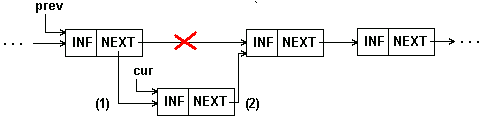
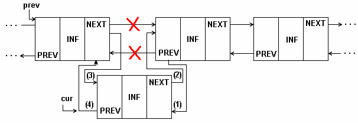
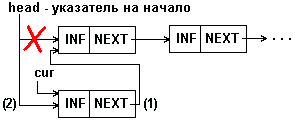
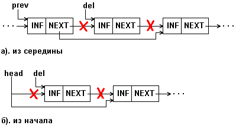
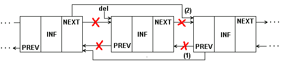
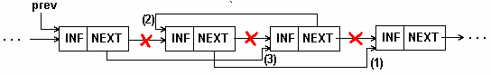
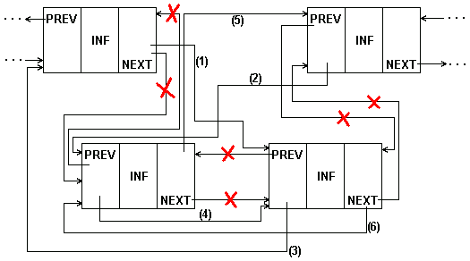

Реализация односвязного и двусвязного списков
Реализация односвязного и двусвязного списков 

По изданию "Модели и структуры данных"
Alexander S. Derevjanko
Ниже рассматриваются некоторые простые операции над линейными списками. Выполнение операций иллюстрируется в общем случае рисунками со схемами изменения связей и программными примерами.
На всех рисунках сплошными линиями показаны связи, имевшиеся до выполнения и сохранившиеся после выполнения операции. Пунктиром показаны связи, установленные при выполнении операции. Значком 'x' отмечены связи, разорванные при выполнении операции. Во всех операциях чрезвычайно важна последовательность коррекции указателей, которая обеспечивает корректное изменение списка, не затрагивающее другие элементы. При неправильном порядке коррекции легко потерять часть списка. Поэтому на рисунках рядом с устанавливаемыми связями в скобках показаны шаги, на которых эти связи устанавливаются.
В программных примерах подразумеваются определенными следующие типы данных:
| · | любая структура информационной части списка: |
type data = ...;
| · | элемент односвязного списка (sll - single linked list): |
type
sllptr = ^slltype; { указатель в односвязном списке }
slltype = record { элемент односвязного списка }
inf : data; { информационная часть }
next : sllptr; { указатель на следующий элемент }
end;
| · | элемент двухсвязного списка (dll - double linked list): |
type
dllptr = ^dlltype; { указатель в двухсвязном списке }
dlltype = record { элемент односвязного списка }
inf : data; { информационная часть }
next : sllptr; { указатель на следующий элемент (вперед) }
prev : sllptr; { указатель на предыдущий элемент (назад) }
end;
Перебор элементов списка 

Эта операция, возможно, чаще других выполняется над линейными списками. При ее выполнении осуществляется последовательный доступ к элементам списка - ко всем до конца списка или до нахождения искомого элемента.
Алгоритм перебора для односвязного списка представляется программным примером 1.
{==== Программный пример 1 ====}
{ Перебор 1-связного списка }
Procedure LookSll(head : sllptr);
{ head - указатель на начало списка }
var cur : sllptr; { адрес текущего элемента }
begin
cur:=head; { 1-й элемент списка назначается текущим }
while cur <> nil do begin < обработка c^.inf >
обрабатывается информационная часть того эл-та, на который указывает cur. Обработка может состоять в:
| · | печати содержимого инф.части; |
| · | модификации полей инф.части; |
| · | сравнения полей инф.части с образцом при поиске по ключу; |
| · | подсчете итераций цикла при поиске по номеру; |
| · | и т.д., и т.п. |
cur:=cur^.next;
из текущего эл-та выбирается указатель на следующий эл-т и для следующей итерации следующий эл-т становится текущим; если текущий эл-т был последний, то его поле next содержит пустой указатель и, т.обр. в cur запишется nil, что приведет к выходу из цикла при проверке условия while
end; end;
{ конец примера }
В двухсвязном списке возможен перебор как в прямом направлении (он выглядит точно так же, как и перебор в односвязном списке), так и в обратном. В последнем случае параметром процедуры должен быть tail - указатель на конец списка, и переход к следующему элементу должен осуществляться по указателю назад:
cur:=cur^.prev;
Алгоритм перебора для двусвязного списка мы оставляем читателю на самостоятельную разработку.
Вставка элемента в список 

Вставка элемента в середину односвязного списка показана на рис.1 и в примере 2.
 Рис. 1: Вставка элемента в середину 1-связного списка
{==== Программный пример 2 ====}
{ Вставка элемента в середину 1-связного списка }
Procedure InsertSll(prev : sllptr; inf : data);
{ prev - адрес предыдущего эл-та; inf - данные нового эл-та }
var cur : sllptr; { адрес нового эл-та }
begin
{ выделение памяти для нового эл-та и запись в его инф.часть }
New(cur); cur^.inf:=inf;
cur^.next:=prev^.next; { эл-т, следовавший за предыдущим теперь
будет следовать за новым }
prev^.next:=cur; { новый эл-т следует за предыдущим }
end;
Рисунок 2 представляет вставку в двухсвязный список.
 Рис. 2: Вставка элемента в середину 2-связного списка
Приведенные примеры обеспечивают вставку в середину списка, но не могут быть применены для вставки в начало списка. При последней должен модифицироваться указатель на начало списка, как показано на рис. 3.
 Рис. 3: Вставка элемента в начало 1-связного списка
Программный пример 3 представляет процедуру, выполняющую вставку элемента в любое место односвязного списка.
{==== Программный пример 3 ====}
{ Вставка элемента в любое место 1-связного списка }
Procedure InsertSll
var head : sllptr; { указатель на начало списка, может измениться в
процедуре, если head=nil - список пустой }
prev : sllptr; { указатель на эл-т, после к-рого делается вставка,
если prev-nil - вставка перед 1-ым эл-том }
inf : data { - данные нового эл-та }
var cur : sllptr; { адрес нового эл-та }
begin
{ выделение памяти для нового эл-та и запись в его инф.часть }
New(cur); cur^.inf:=inf;
if prev <> nil then begin { если есть предыдущий эл-т - вставка в
середину списка, см. прим. 2 }
cur^.next:=prev^.next; prev^.next:=cur;
end
else begin { вставка в начало списка }
cur^.next:=head; { новый эл-т указывает на бывший 1-й эл-т списка;
если head=nil, то новый эл-т будет и последним эл-том списка }
head:=cur; { новый эл-т становится 1-ым в списке, указатель на
начало теперь указывает на него }
end; end;
Удаление элемента из списка 

Удаление элемента из односвязного списка показано на рис. 4.
 Рис. 4: Удаление элемента из 1-связного списка
Очевидно, что процедуру удаления легко выполнить, если известен адрес элемента, предшествующего удаляемому (prev на рис.4.а). Мы, однако, на рис. 4 и в примере 1 приводим процедуру для случая, когда удаляемый элемент задается своим адресом (del на рис.4). Процедура обеспечивает удаления как из середины, так и из начала списка.
{==== Программный пример 1 ====}
{ Удаление элемента из любого места 1-связного списка }
Procedure DeleteSll(
var head : sllptr; { указатель на начало списка, может
измениться в процедуре }
del : sllptr { указатель на эл-т, к-рый удаляется } );
var prev : sllptr; { адрес предыдущего эл-та }
begin
if head=nil then begin { попытка удаления из пустого списка
асценивается как ошибка (в последующих примерах этот случай
учитываться на будет) }
Writeln('Ошибка!'); Halt;
end;
if del=head then { если удаляемый эл-т - 1-й в списке, то
следующий за ним становится первым }
head:=del^.next
else begin { удаление из середины списка }
{ приходится искать эл-т, предшествующий удаляемому;
поиск производится перебором списка с самого его начала,
пока не будет найдет эл-т, поле next к-рого совпадает
с адресом удаляемого элемента. }
prev:=head^.next;
while (prev^.next<>del) and (prev^.next<>nil) do
prev:=prev^.next;
if prev^.next=nil then begin
{ это случай, когда перебран весь список, но эл-т не найден,
он отсутствует в списке; расценивается как ошибка
(в последующих примерах этот случай учитываться на будет)
Writeln('Ошибка!'); Halt;
end;
prev^.next:=del^.next;
{ предыдущий эл-т теперь указывает
на следующий за удаляемым }
end;
{ элемент исключен из списка, теперь можно освободить
занимаемую им память }
Dispose(del);
end;
На практике в односвязных списках используется преимущественно операция удаления элемента, следующего за данным, так как проход по всему списку - слишком дорогостоящая операция. Получается, также, что мы не можем быстро удалить текущий элемент. Такую операцию допускает лишь двусвязный список. Удаление элемента из двухсвязного списка показано на рис.5.
 Рис. 5: Удаление элемента из 2-связного списка
Процедуру удаления элемента из двухсвязного списка окажется даже проще, чем для односвязного, так как в ней не нужен поиск предыдущего элемента, он выбирается по указателю назад.
Перестановка элементов списка. 

Изменчивость динамических структур данных предполагает не только изменения размера структуры, но и изменения связей между элементами. Для связных структур изменение связей не требует пересылки данных в памяти, а только изменения указателей в элементах связной структуры. В качестве примера приведена перестановка двух соседних элементов списка. В алгоритме перестановки в односвязном списке (рис.6, пример 2) исходили из того, что известен адрес элемента, предшествующего паре, в которой производится перестановка. В приведенном алгоритме также не учитывается случай перестановки первого и второго элементов.
 Рис. 6: Перестановка соседних элементов 1-связного списка
{==== Программный пример 2 ====}
{ Перестановка двух соседних элементов в 1-связном списке }
Procedure ExchangeSll(
prev : sllptr { указатель на эл-т, предшествующий
переставляемой паре } );
var p1, p2 : sllptr; { указатели на эл-ты пары }
begin
p1:=prev^.next; { указатель на 1-й эл-т пары }
p2:=p1^.next; { указатель на 2-й эл-т пары }
p1^.next:=p2^.next; { 1-й элемент пары теперь указывает на
следующий за парой }
p2^.next:=p1; { 1-й эл-т пары теперь следует за 2-ым }
prev^.next:=p2; { 2-й эл-т пары теперь становится 1-ым }
end;
В процедуре перестановки для двухсвязного списка (рис.7.) нетрудно учесть и перестановку в начале/конце списка.
Копирование части списка 

При копировании исходный список сохраняется в памяти, и создается новый список. Информационные поля элементов нового списка содержат те же данные, что и в элементах старого списка, но поля связок в новом списке совершенно другие, поскольку элементы нового списка расположены по другим адресам в памяти. Существенно, что операция копирования предполагает дублирование данных в памяти. Если после создания копии будут изменены данные в исходном списке, то изменение не будет отражено в копии и наоборот.
 Рис. 5: Перестановка соседних элементов 2-связного списка
Копирование для односвязного списка показано в программном примере 3.
{==== Программный пример 3 ====}
{ Копирование части 1-связного списка. head - указатель на
начало копируемой части; num - число эл-тов. Ф-ция возвращает
указатель на список-копию }
Function CopySll ( head : sllptr; num : integer) : sllptr;
var cur, head2, cur2, prev2 : sllptr;
begin
if head=nil then { исходный список пуст - копия пуста }
CopySll:=nil
else begin
cur:=head; prev2:=nil;
{ перебор исходного списка до конца или по счетчику num }
while (num>0) and (cur<>nil) do begin
{ выделение памяти для эл-та выходного списка и запись в него
информационной части }
New(cur2); cur2^.inf:=cur^.inf;
{ если 1-й эл-т выходного списка - запоминается указатель на
начало, иначе - записывается указатель в предыдущий элемент }
if prev2<>nil then prev2^.next:=cur2 else head2:=cur2;
prev2:=cur2; { текущий эл-т становится предыдущим }
cur:=cur^.next; { продвижение по исходному списку }
num:=num-1; { подсчет эл-тов }
end;
cur2^.next:=nil; { пустой указатель - в последний эл-т
выходного списка }
CopySll:=head2; { вернуть указатель на начало вых.списка }
end; end;
Слияние двух списков 

Операция слияния заключается в формировании из двух списков одного - она аналогична операции сцепления строк. В случае односвязного списка, показанном в примере 4, слияние выполняется очень просто. Последний элемент первого списка содержит пустой указатель на следующий элемент, этот указатель служит признаком конца списка. Вместо этого пустого указатель в последний элемент первого списка заносится указатель на начало второго списка. Таким образом, второй список становится продолжением первого.
{==== Программный пример 4 ====}
{ Слияние двух списков. head1 и head2 - указатели на начала
списков. На результирующий список указывает head1 }
Procedure Unite (var head1, head2 : sllptr);
var cur : sllptr;
begin { если 2-й список пустой - нечего делать }
if head2<>nil then begin
{ если 1-й список пустой, выходным списком будет 2-й }
if head1=nil then head1:=head2
else { перебор 1-го списка до последнего его эл-та }
begin cur:=head1;
while cur^.next<>nil do cur:=cur^.next;
{ последний эл-т 1-го списка указывает на начало 2-го }
cur^.next:=head2;
end; head2:=nil; { 2-й список аннулируется }
end; end;
Применение линейных списков 

Линейные списки находят широкое применение в приложениях, где непредсказуемы требования на размер памяти, необходимой для хранения данных; большое число сложных операций над данными, особенно включений и исключений. На базе линейных списков могут строится стеки, очереди и деки. Представление очереди с помощью линейного списка позволяет достаточно просто обеспечить любые желаемые дисциплины обслуживания очереди. Особенно это удобно, когда число элементов в очереди трудно предсказуемо.
В программном примере 5 показана организация стека на односвязном линейном списке. Стек представляется как линейный список, в котором включение элементов всегда производятся в начала списка, а исключение - также из начала. Для представления его нам достаточно иметь один указатель - top, который всегда указывает на последний записанный в стек элемент. В исходном состоянии (при пустом стеке) указатель top - пустой. Процедуры StackPush и StackPop сводятся к включению и исключению элемента в начало списка.
Обратите внимание, что при включении элемента для него выделяется память, а при исключении - освобождается. Перед включением элемента проверяется доступный объем памяти, и если он не позволяет выделить память для нового элемента, стек считается заполненным. При очистке стека последовательно просматривается весь список и уничтожаются его элементы. При списковом представлении стека оказывается непросто определить размер стека. Эта операция могла бы потребовать перебора всего списка с подсчета числа элементов. Чтобы избежать последовательного перебора всего списка мы ввели дополнительную переменную stsize, которая отражает текущее число элементов в стеке и корректируется при каждом включении/исключении.
{==== Программный пример 5 ====}
{ Стек на 1-связном линейном списке }
unit Stack;
Interface
type data = ...; { эл-ты могут иметь любой тип }
Procedure StackInit;
Procedure StackClr;
Function StackPush(a : data) : boolean;
Function StackPop(Var a : data) : boolean;
Function StackSize : integer;
Implementation
type stptr = ^stit; { указатель на эл-т списка }
stit = record { элемент списка }
inf : data; { данные }
next: stptr; { указатель на следующий эл-т }
end;
Var top : stptr; { указатель на вершину стека }
stsize : longint; { размер стека }
{** инициализация - список пустой }
Procedure StackInit;
begin top:=nil; stsize:=0; end; { StackInit }
{** очистка - освобождение всей памяти }
Procedure StackClr;
var x : stptr;
begin { перебор эл-тов до конца списка и их уничтожение }
while top<>nil do
begin x:=top; top:=top^.next; Dispose(x); end;
stsize:=0;
end; { StackClr }
Function StackPush(a: data) : boolean; { занесение в стек }
var x : stptr;
begin { если нет больше свободной памяти - отказ }
if MaxAvail < SizeOf(stit) then StackPush:=false
else { выделение памяти для эл-та и заполнение инф.части }
begin New(x); x^.inf:=a;
{ новый эл-т помещается в голову списка }
x^.next:=top; top:=x;
stsize:=stsize+1; { коррекция размера }
StackPush:=true;
end;
end; { StackPush }
Function StackPop(var a: data) : boolean; { выборка из стека }
var x : stptr;
begin
{ список пуст - стек пуст }
if top=nil then StackPop:=false
else begin
a:=top^.inf; { выборка информации из 1-го эл-та списка }
{ 1-й эл-т исключается из списка, освобождается память }
x:=top; top:=top^.next; Dispose(top);
stsize:=stsize-1; { коррекция размера }
StackPop:=true;
end; end; { StackPop }
Function StackSize : integer; { определение размера стека }
begin StackSize:=stsize; end; { StackSize }
END.
Программный пример для организация на односвязном линейном списке очереди FIFO разработайте самостоятельно. Для линейного списка, представляющего очередь, необходимо будет сохранять: top - на первый элемент списка, и bottom - на последний элемент.
Линейные связные списки иногда используются также для представления таблиц - в тех случаях, когда размер таблицы может существенно изменяться в процессе ее существования. Однако, то обстоятельство, что доступ к элементам связного линейного списка может быть только последовательным, не позволяет применить к такой таблице эффективный двоичный поиск, что существенно ограничивает их применимость. Поскольку упорядоченность такой таблицы не может помочь в организации поиска, задачи сортировки таблиц, представленных линейными связными списками, возникают значительно реже, чем для таблиц в векторном представлении. Однако, в некоторых случаях для таблицы, хотя и не требуется частое выполнение поиска, но задача генерации отчетов требует расположения записей таблицы в некотором порядке. Некоторые алгоритмы, возможно, потребуют каких-либо усложнений структуры, например, быструю сортировку Хоара целесообразно проводить только на двухсвязном списке, в цифровой сортировке удобно создавать промежуточные списке для цифровых групп и т.д. Мы приведем два простейших примера сортировки односвязного линейного списка. В обоих случаях мы предполагаем, что определены типы данных:
type lptr = ^item; { указатель на элемент списка }
item = record { элемент списка }
key : integer; { ключ }
inf : data; { данные }
next: lptr; { указатель на элемент списка }
end;
В обоих случаях сортировка ведется по возрастанию ключей. В обоих случаях параметром функции сортировки является указатель на начало неотсортированного списка, функция возвращает указатель на начало отсортированного списка. Прежний, несортированный список перестает существовать.
Пример 6 демонстрирует сортировку выборкой. Указатель newh является указателем на начало выходного списка, исходно - пустого. Во входном списке ищется максимальный элемент. Найденный элемент исключается из входного списка и включается в начало выходного списка. Работа алгоритма заканчивается, когда входной список станет пустым. Обратим внимание читателя на несколько особенностей алгоритма. Во-первых, во входном списке ищется всякий раз не минимальный, а максимальный элемент. Поскольку элемент включается в начало выходного списка, элементы с большими ключами оттесняются к концу выходного списка и последний, таким образом, оказывается отсортированным по возрастанию ключей. Во-вторых, при поиске во входном списке сохраняется не только адрес найденного элемента в списке, но и адрес предшествующего ему в списке эле- мента - это впоследствии облегчает исключение элемента из списка (вспомните пример 1). В-третьих, обратите внимание на то, что у нас не возникает никаких проблем с пропуском во входном списке тех элементов, которые уже выбраны - они просто исключены из входной структуры данных.
{==== Программный пример 6 ====}
{ Сортировка выборкой на 1-связном списке }
Function Sort(head : lptr) : lptr;
var newh, max, prev, pmax, cur : lptr;
begin newh:=nil; { выходной список - пустой }
while head<>nil do { цикл, пока не опустеет входной список }
begin max:=head; prev:=head; { нач.максимум - 1-й эл-т }
cur:=head^.next; { поиск максимума во входном списке }
while cur<>nil do begin
if cur^.key>max^.key then begin
{ запоминается адрес максимума и адрес предыдущего эл-та }
max:=cur; pmax:=prev;
end; prev:=cur; cur:=cur^.next; { движение по списку }
end; { исключение максимума из входного списка }
if max=head then head:=head^.next
else pmax^.next:=max^.next;
{ вставка в начало выходного списка }
max^.next:=newh; newh:=max;
end; Sort:=newh;
end;
В программном примере 7 - иллюстрации сортировки вставками - из входного списка выбирается (и исключается) первый элемент и вставляется в выходной список "на свое место" в соответствии со значениями ключей. Обратите внимание на то, что в двух последних примерах пересылок данных не происходит, все записи таблиц остаются на своих местах в памяти, меняются только связи между ними - указатели.
{==== Программный пример 7 ====}
{ Сортировка вставками на 1-связном списке }
type data = integer;
Function Sort(head : lptr) : lptr;
var newh, cur, sel : lptr;
begin
newh:=nil; { выходной список - пустой }
while head <> nil do begin { цикл, пока не опустеет входной список }
sel:=head; { эл-т, который переносится в выходной список }
head:=head^.next; { продвижение во входном списке }
if (newh=nil) or (sel^.key < newh^.key) then begin
{выходной список пустой или элемент меньше 1-го-вставка в начало}
sel^.next:=newh; newh:=sel; end
else begin { вставка в середину или в конец }
cur:=newh;
{ до конца выходного списка или пока ключ следующего эл-та не будет
больше вставляемого }
while (cur^.next <> nil) and (cur^.next^.key < sel^.key) do
cur:=cur^.next;
{ вставка в выходной список после эл-та cur }
sel^.next:=cur^.next; cur^.next:=sel;
end; end; Sort:=newh;
end;
Мультисписки 

В программных системах, обрабатывающих объекты сложной структуры, могут решаться разные подзадачи, каждая из которых требует, возможно, обработки не всего множества объектов, а лишь какого-то его подмножества. Так, например, в автоматизированной системе учета лиц, пострадавших вследствие аварии на ЧАЭС, каждая запись об одном пострадавшем содержит более 50 полей в своей информационной части. Решаемые же автоматизированной системой задачи могут потребовать выборки, например:
| · | участников ликвидации аварии; |
| · | переселенцев из зараженной зоны; |
| · | лиц, состоящих на квартирном учете; |
| · | лиц с заболеваниями щитовидной железы; |
| · | и т.д., и т.п. |
Для того, чтобы при выборке каждого подмножества не выполнять полный просмотр с отсеиванием записей, к требуемому подмножеству не относящихся, в каждую запись включаются дополнительные поля ссылок, каждое из которых связывает в линейный список элементы соответствующего подмножества. В результате получается многосвязный список или мультисписок, каждый элемент которого может входить одновременно в несколько односвязных списков. Пример такого мультисписка для названной нами автоматизированной системы показан на рис.8.
К достоинствам мультисписков помимо экономии памяти (при множестве списков информационная часть существует в единственном экземпляре) следует отнести также целостность данных - в том смысле, что все подзадачи работают с одной и той же версией информационной части и изменения в данных, сделанные одной подзадачей немедленно становятся доступными для другой подзадачи.
Каждая подзадача работает со своим подмножеством как с линейным списком, используя для этого определенное поле связок. Специфика мультисписка проявляется только в операции исключения элемента из списка. Исключение элемента из какого-либо одного списка еще не означает необходимости удаления элемента из памяти, так как элемент может оставаться в составе других списков. Память должна освобождаться только в том случае, когда элемент уже не входит ни в один из частных списков мультисписка. Обычно задача удаления упрощается тем, что один из частных списков является главным - в него обязательно входят все имеющиеся элементы. Тогда исключение элемента из любого неглавного списка состоит только в переопределении указателей, но не в освобождении памяти. Исключение же из главного списка требует не только освобождения памяти, но и переопределения указателей как в главном списке, так и во всех неглавных списках, в которые удаляемый элемент входил.